windchime.world
| pc | 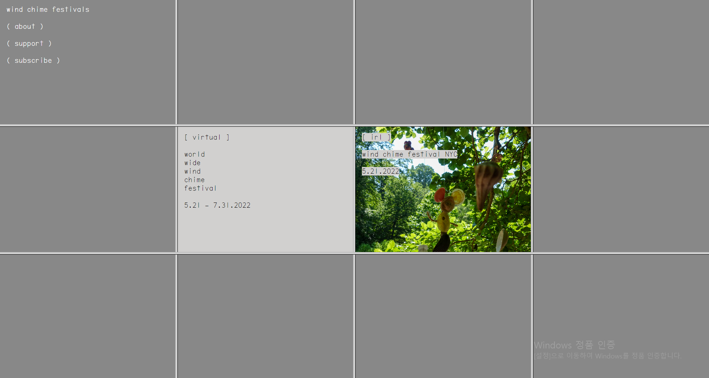 | 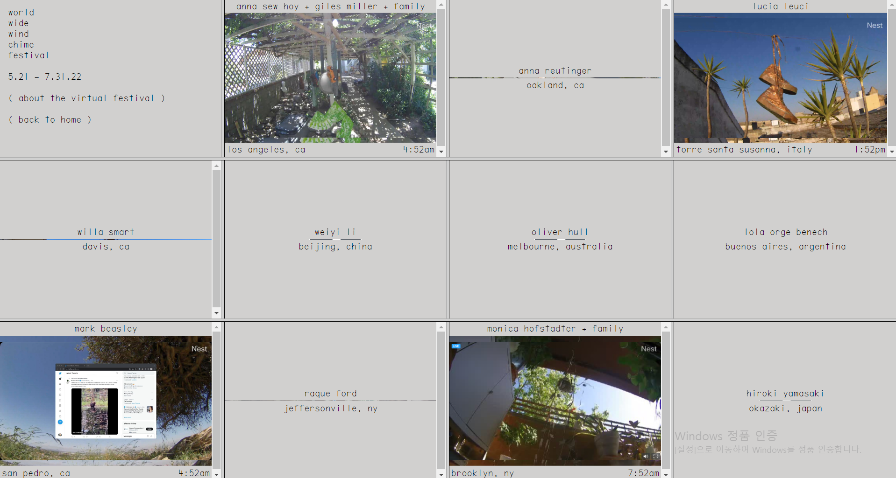 | 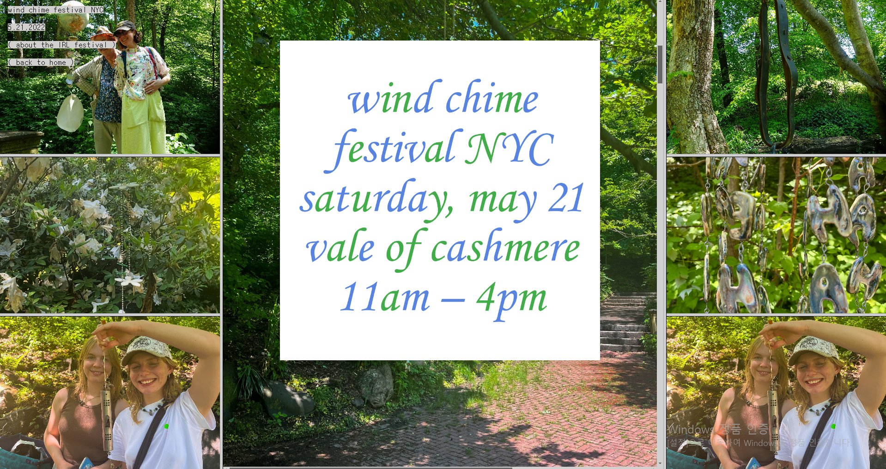 |
| 모바일 | 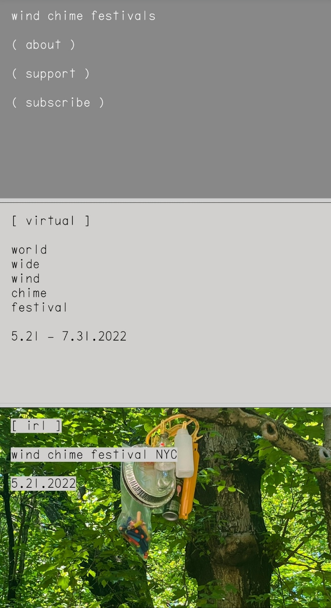 | 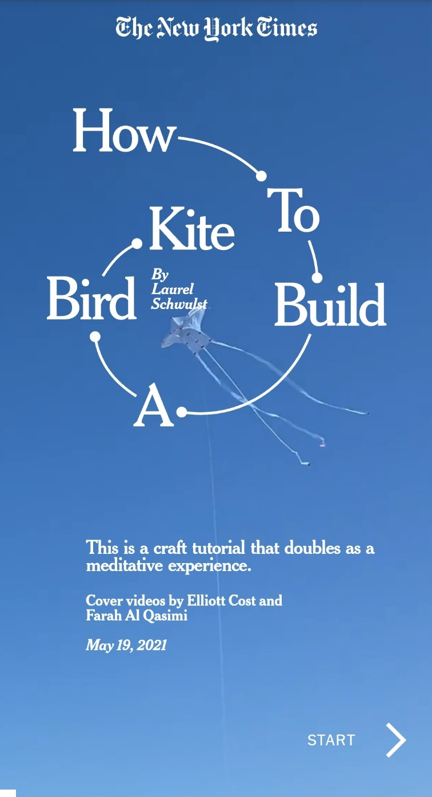 | 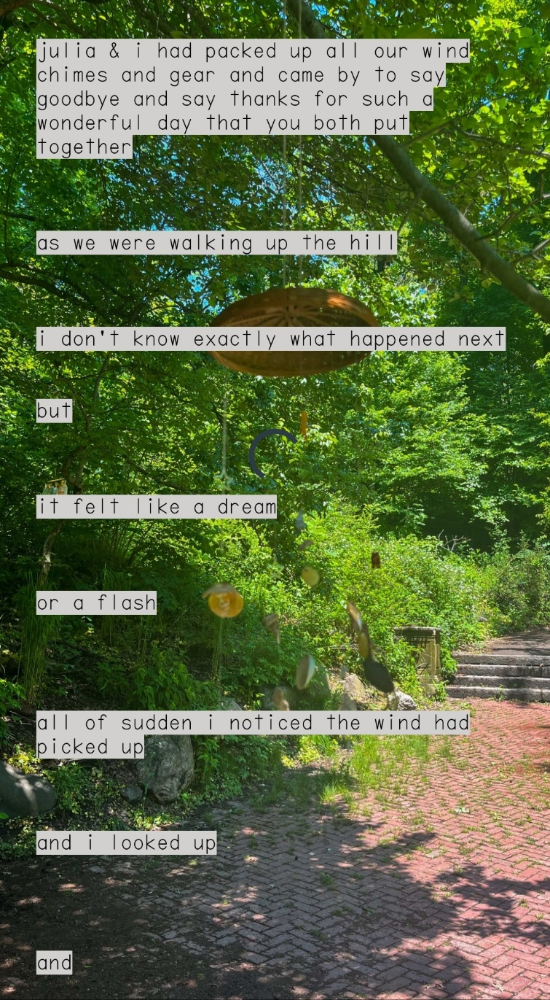 |
단일한 진회색으로 거의 통일한 첫 화면이 방문자에게 부담스럽지 않게 다가가게 만든다. 12칸으로 화면을 나눈 것처럼 줄을 그어놓아 단조로울 수 있는 화면에 변화를 준다. 중앙의 칸 중 왼쪽을 누르면 각각의 페스티벌에 관한 사진들이 칸을 누르면 창문 형식으로 열리는 구성이 재밌다. 오른쪽을 누르면 특정 페스티벌에 대한 내용을 왼쪽과 다른 구성으로 만들어 차별점을 두었다. 찍은 사진들의 일부분을 배경으로 넣어 화면의 효율성을 높였다. 모바일에서는 모바일 화면에 맞게 첫 화면을 간단히 3가지로 줄여 세로로 배치했다. 왼쪽 칸의 페이지에는 pc와 달리 사진들이 없고 글만 있다. pc에서 보이는 오른쪽 칸의 페이지는 화면이 넓게 보이기 때문에 여러 사진을 배경에 넣었지만 모바일은 보이는 화면이 좁아 배경에 세로로 긴 사진 하나를 배치해서 깔끔하게 보이도록 만들었다.
sites.elliott.computer/one-minute-park
| pc | 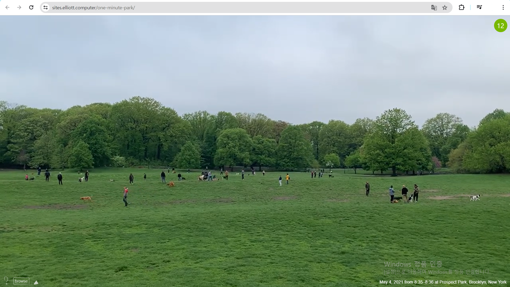 | 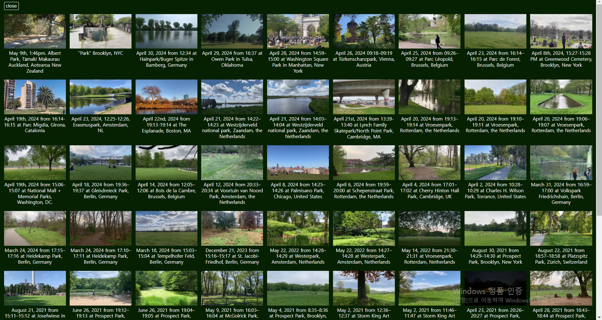 |
| 모바일 | 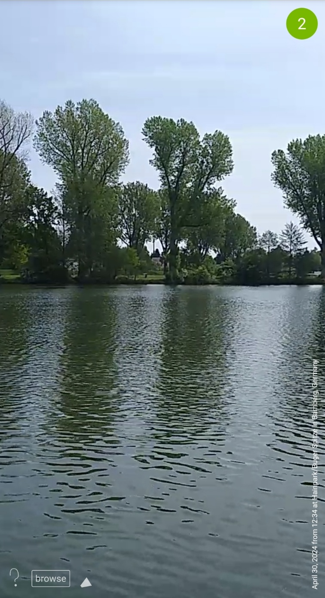 | 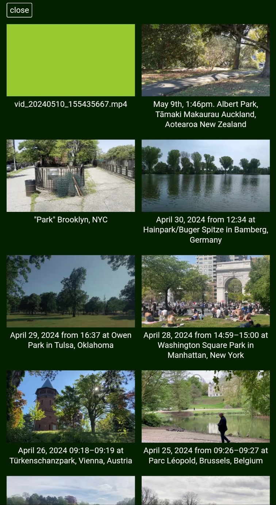 |
웹사이트에 들어가자마자 바로 보이는 1분 영상이 제작자가 웹사이트를 만든 의도를 직접적으로 알 수 있는 것이 좋다. 링크에 적혀있는 것처럼 영상들이 모두 1분으로 구성이 되어있다. 화면에 다른 꾸밈이 없이 영상 하나만으로 꽉 차있는 것이 구성이 특색 있다. 영상을 보는 것에 방해가 되지 않도록 영상이 지나가는 시간과 사이트의 설명, 영상 종류, 소리의 유무를 작은 크기로 곳곳에 배치한 배려가 보인다. 원하는 영상을 볼 수 있고 한눈에 들어올 수 있도록 여러 영상들을 일정히 작게 배치해 놓았다. 방문자의 성향에 맞게 소리를 무음하거나 틀수 있게 만들었다. 모바일에서는 영상을 화면에 맞게 가로로 놓지 않고 pc와 같이 크기를 가득하게 채웠다. 영상이 잘리게 구성한 이유가 있을 것이라고 생각해 매력적이다. 가로가 넓지 않아서 영상의 제목을 하단에 세로로 배치하였다.
ayearofconsciouspractice.com
| pc | 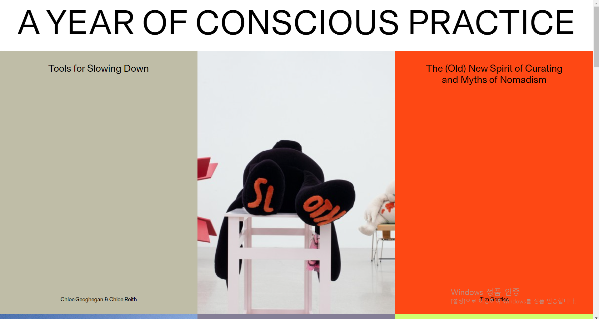 |
| 모바일 | 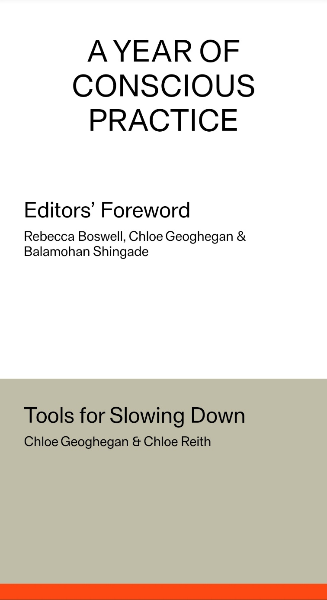 |
바로 보이는 2개의 색과 이미지의 색 조합이 조화롭다. 맨 위에 웹사이트 제목을 기본 글씨체로 크게 띄어놓아 집중하게 만든다. 그냥 글만으로 웹사이트를 채우지 않고 어울리는 이미지들을 하나의 행에 끼워 넣어 화면구성이 심심하지 않도록 만들었다. 글 칸 위에 마우스를 올리면 세로가 긴 타원형으로 변해서 방문자가 어떤 글을 선택했는지 명확히 보여준다. 선택한 글을 다 보면 마지막 부분에 다음 글로 넘어가는 연결을 해놓아 편리하게 볼 수 있게 만든다. 또한, 왼쪽 상단에 원을 누르면 홈, 웹사이트에 대한 부가 정보, 홈으로 돌아가지 않고 원하는 글을 선택할 수 있게 만든 구성들이 좋다. 왼쪽 상단에 있는 원은 다른 웹사이트로 연결해 주는 용도와 함께 홈에서 보이는 글 칸의 색을 원에 점점 채워서 글을 어디까지 읽었는지 알려주는 것이 가장 매력적이라고 생각한다. 웹사이트에 삽입되는 글 제작의 편집자와 작성자를 글 칸의 색으로 나타내어 많은 사람들을 잘 분리해놓았다. 모바일로는 이미지를 추가하지 않고 글로만 홈을 채운 것과 글 제목을 크게 넣어 모바일로도 잘 보일 수 있도록 설정하였다.